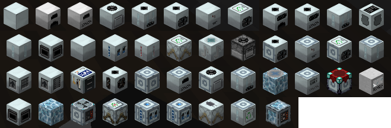
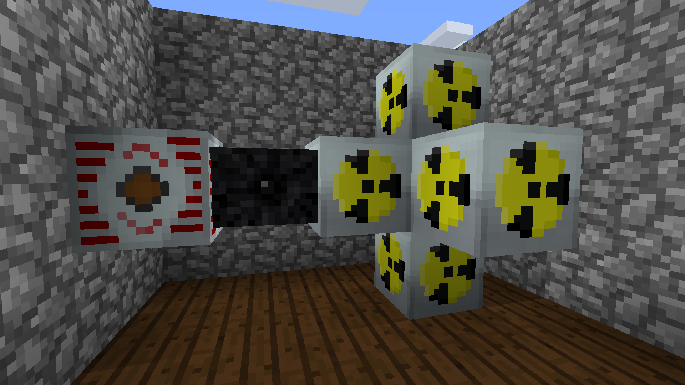
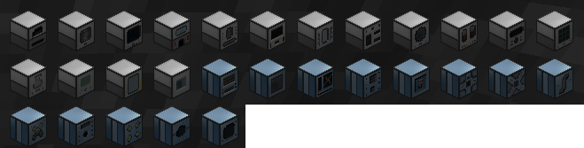
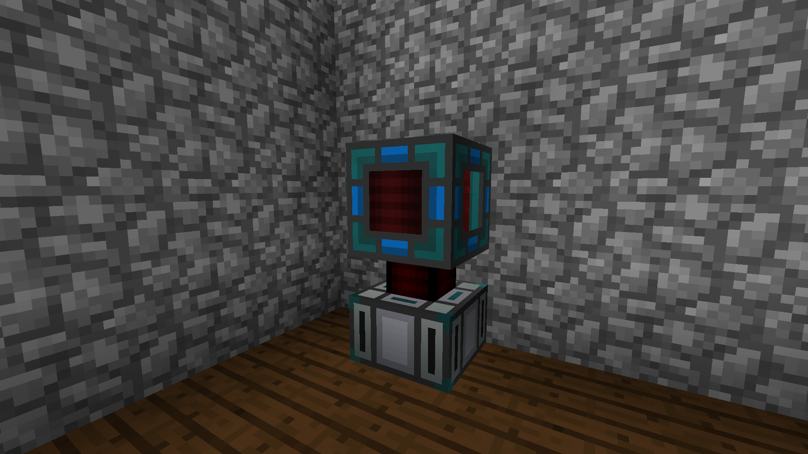

Tech Mod Comparison: IC2 vs Thermal Expansion
Industrial Craft 2 (Classic)
Overview:
Industrial Craft 2 adds plenty for your technology needs including machines, power generation, armors, tools, weapons, and new crops.
Many of the machines added from IC2
Complexity:
While IC2 adds a lot, it's pretty complex. There are a wide range of power options, from water mills to nuclear power. The way it manages power is also semi-realistic. It's energy type, EU, has low, medium, high, and extreme voltages which require transformers to switch between. They have a large variety of cables which have different energy loss rates and limits depending on your needs and resources.
One of the most complex builds from IC2, nuclear generators are very complicated but can potentially output the most power
Thermal Expansion
Overview:
Thermal Expansion adds a healthy amount of machines and power sources, as well as powerless machines to help with automation.
Gray machines are your standard ones, blue machines are your powerless ones
Complexity:
Thermal Expansion is relatively simple; their upgrade system means you only have to place a machine once and can simply apply upgrades without having to break or move the machine. Their power generation options, while limited, are very intuitive. Their power transfer involves flux ducts, which simply transfer energy at a max rate depending on the complexity of the duct. No explosions, no voltages, no fuss.
